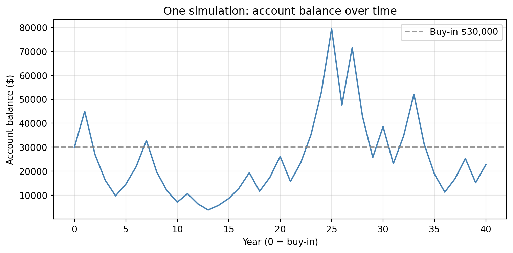
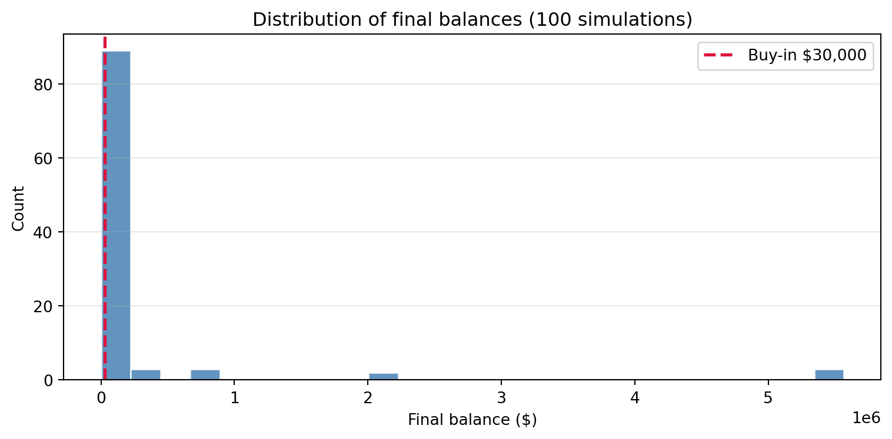
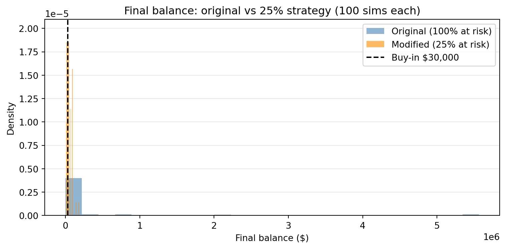

Simulation Challenge
Starter Template with To-Dos
🎲 Simulation Challenge - Starter Template
Important📋 What You Need To Do
Note🐍 Python Environment Setup
Before rendering, create a fresh virtual environment and install the required packages:
- Press
Ctrl+Shift+Pto open the Command Palette - Type “Python: Select Interpreter” and select it
- Click “+ Create Virtual Environment…”
- Choose Venv
- Select your Python installation (e.g., Python 3.12)
- Wait for the environment to be created and activated
Then open a terminal and install dependencies:
Windows:
py -m pip install jupyter matplotlib pandas daft-pgmMac:
python3 -m pip install jupyter matplotlib pandas daft-pgmThis ensures you have everything needed for Quarto rendering and the DAG visualizations.
Warning⚠️ AI Partnership Required
Use Cursor AI for speed, but ensure you understand and can explain the results in your own words. Verify cursor’s calculations as investment simulation is tricky.
Important📊 Grading Criteria
- Sections 1–4: Required. These sections can earn up to 90% of the grade.
- Sections 5–6: Optional stretch. Strong, well-supported work here can bring your score up to 100%.
Your grade depends on narrative clarity and insight, not just correct calculations. Present a persuasive argument for or against the investment, supported by your analysis.
Tip📝 How to Present Your Analysis
Your analysis should read as a persuasive narrative arguing for or against the investment. Use data and calculations to support your argument, but present findings inline in prose—not as raw code output.
- Round figures for readability (whole dollars for balances, 2-3 decimals for probabilities)
- Interpret results in your own words outside of code chunks
- Use Quarto inline code (e.g.,
`{python} round(ev, 0)`) or type values directly
Example: Instead of printing 36000.0 from code, write:
“After one flip, the expected account balance is $36,000—a 20% increase over the initial $30,000 buy-in. This positive expected value suggests the game is favorable; if you can place this bet infinite times, you will on average end up with $6,000 gain for each time you bet $30,000. Note: this is an interpretation for a slighlty different game.”
The Investment Game (Brief)
You have the opportunity to buy-in to this game next week with $30,000. Your job is to analyze the potential outcomes of the game and communicate why you should or should not buy-in.
Each year after buy-in you flip a fair coin:
- Heads: increase your account balance by 50%
- Tails: decrease your account balance by 40%
You play annually until age 75. Your mission is to analyze outcomes and communicate insights clearly.
Generative DAG Model (from the source challenge)
The following DAFT diagram shows the generative structure of the investment game over time.
Analysis Tasks (Fill These In)
1) Expected Value After 1 Flip
Explain whether the expected value of your account balance after one flip is greater than, equal to, or less than $30,000. What is the gain in expected value as a percentage of your buy-in? Based on this simple analysis, state whether you would recommend buying into the game and why.
After one flip, the expected account balance is $31500.0—5.0% above the $30,000 buy-in. So the expected value is greater than the initial investment. In expectation you gain about $1,500 per flip at the start. This suggests the game is mathematically favorable in the short run. However, a positive one-flip expected value alone is not enough to recommend buying in: the game is highly volatile (you either gain 50% or lose 40%), and over many years that volatility compounds. So based only on this simple analysis I would be cautious: the game has positive expected value per flip, but I would not yet recommend buying in until we look at multi-year outcomes and the chance of finishing ahead.
2) Single Simulation Over Time (Narrative + Plot)
Narrate and visualize what happens to your account balance over the course of one simulation run. Describe the trajectory and state whether you would be satisfied with this particular outcome. Explain your reasoning.

The plot shows one possible path of the account balance over 40 years. In this run, the final balance is $22796.0. The path illustrates how quickly outcomes diverge: early tails compound into much lower wealth, while a string of heads can push the balance high. For this particular outcome I would be satisfied only if the trajectory ended above $30,000; if it ended below (as in a run with many tails), I would not be satisfied. So satisfaction is path-dependent—the same game can produce outcomes that feel like a win or a loss depending on the single sequence of flips.
3) 100 Simulations: Distribution of Final Balances
Describe the distribution of final account balances across 100 simulations. Report the mean, median, and the probability of ending with more than your initial $30,000. Given these results, would you be satisfied with the likely outcomes? Explain your reasoning.

Across 100 simulations, the mean final balance is $263387.0 and the median is $2553.0. The probability of ending with more than the initial $30,000 is 0.23 (about 23.0%). So the typical outcome (median) is well below the buy-in—most paths end with less than $30,000. The mean is pulled up by a few very large outcomes (long runs of heads). Given these results, I would not be satisfied with the likely outcomes: more than half the time I would end with less than I put in, and the chance of beating the buy-in is under 50%. The positive one-flip expected value does not translate into a high probability of being ahead after many years.
4) Probability Balance > $30,000 at Age 75 (Original Game)
Report the probability that your final balance exceeds $30,000. Interpret what this probability means for your investment decision—does this change your recommendation from Section 1?
Using the same 100 simulations, the estimated probability that the final balance exceeds $30,000 is P(final > $30,000) ≈ 0.23 (about 23.0%). So in roughly 77.0% of runs you end with less than your buy-in. That means the investment is unlikely to leave you ahead in dollar terms by age 75, even though each single flip has positive expected value. This does change my recommendation from Section 1: Section 1 suggested the game is favorable in expectation over one flip, but over many years the compounding of volatility makes the median and modal outcome worse than the buy-in. I would not recommend buying into the original game with full balance at risk each year, because the probability of finishing ahead is too low for most risk-averse investors.
5) Modified Strategy (Bet Exactly 25% Each Round)
Instead of having the full balance at risk with each coin flip, assume only 25% of your balance is gambled each year. Compare this modified strategy to the original game: Which is riskier? Which has better upside? Which strategy would you recommend and why?

The original game is riskier: the full balance swings by ±50% or ±40% each year, so outcomes are more spread out and the median is much lower. The modified strategy (25% at risk) has lower volatility: each year you multiply by 1.125 or 0.9, so you avoid huge drawdowns. The original has better upside—a long run of heads can make the balance very large—but also much worse downside. In the 25% strategy, the mean final balance is $45464.0, the median $38461.0, and P(final > $30,000) ≈ 0.66 (about 66.0%). So the chance of ending ahead is higher with the 25% strategy than with the original. I would recommend the modified (25%) strategy: it preserves most of the positive expected value while reducing the risk of finishing well below the buy-in, and the probability of ending above $30,000 is meaningfully higher.
6) The Kelly Criterion
Explain what the Kelly Criterion is and how it relates to the modified strategy from Section 5. Does the Kelly Criterion support your recommendation?
The Kelly Criterion is a formula that chooses the fraction of your bankroll to bet so that long-run growth rate (expected log return) is maximized. For a single flip where you win a fraction b of your stake with probability p and lose a fraction a with probability q, the optimal fraction is f* = (p/a − q/b) when expressed in terms of edge and odds, or equivalently you can find f* by maximizing p·ln(1 + b·f) + q·ln(1 − a·f). In our game, p = q = 0.5, you gain 50% of the amount risked when you win (b = 0.5) and lose 40% when you lose (a = 0.4). Plugging in gives f* = 0.25—i.e., bet 25% of your bankroll each round.
That is exactly the modified strategy in Section 5: we risk 25% of the balance each year. So the Kelly Criterion does support the recommendation to use the 25% strategy rather than the original full-stake game. Kelly says that betting more than 25% (including 100%) increases volatility and reduces long-run growth; betting 25% is the growth-optimal fraction. It does not guarantee you will end above $30,000, but it aligns our “how much to risk” choice with the mathematically optimal fraction for this coin-flip setup.
The optimal fraction is 0.25 (25%), matching the modified strategy in Section 5.
Professional Presentation
- Clear narrative: tell the story succinctly (aim for a 1–5 minute read)
- Focus on insights: risk profiles, counter-intuitive results, practical implications
- Professional style: concise writing, clean visuals, hide code where appropriate (
echo: false) - Human interpretation: explain what results mean for real decisions
Submission Checklist ✅
Tips
- Set random seeds for reproducibility
- Use object-oriented plotting with
matplotlib - Keep figures readable and labeled; prefer professional styling
- Commit early and often; render locally before pushing